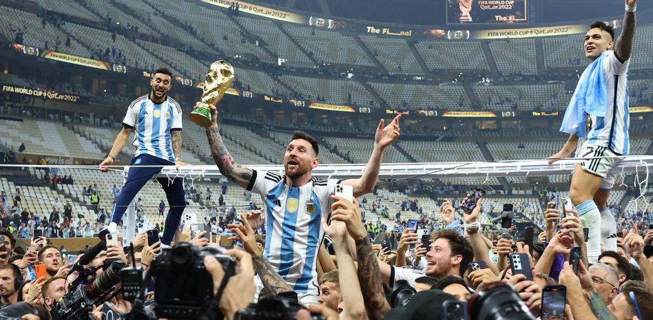

Argentina ha vuelto a ganar la Copa del Mundo 36 años después de su último título La final del Mundial de Qatar fue un partido emocionante que enfrentó a dos de las mejores selecciones del mundo: Argentina y Francia. Después de terminar la prórroga con un empate en el marcador (3-3), ambos equipos decidieron el resultado en los penaltis, con victoria para los sudamericanos. Leo Messi, capitán y estrella de la selección albiceleste, ha sido nombrado el mejor jugador del torneo, igualando al histórico Maradona. Durante el partido, el argentino anotó dos goles y también el penalti en la tanda final. El presidente de la FIFA, Gianni Infantino, y el emir de Qatar, Tamim bin Hamad Al Thani, fueron los encargados de entregar la copa. Tras darle el trofeo a Messi, el emir le puso una túnica semitransparente llamada bisht, que tiene un significado muy importante para los cataríes, pues suele utilizarse para celebraciones y ocasiones especiales
Leo Messi lideró el triunfo de la selección argentina frente a Francia y fue proclamado mejor jugador de la competición
 mundial pagina anterior